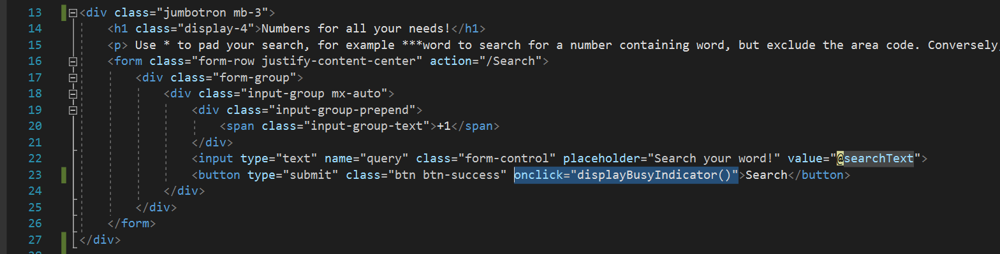
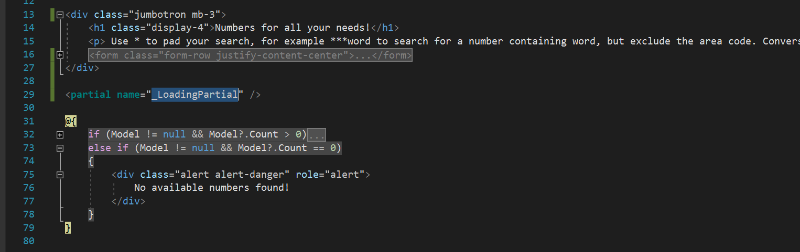
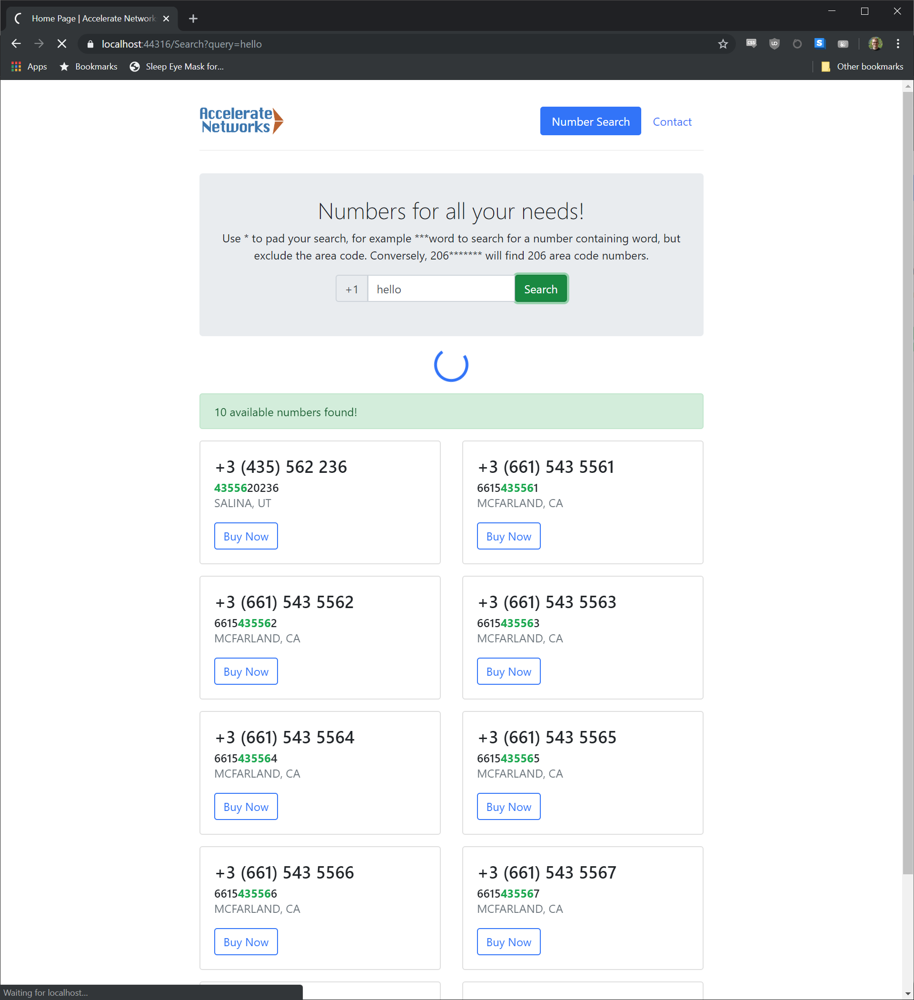

Adding a Loading Spinner to an ASP.NET Core 3.0 MVC Web App
Recently I built an ASP.NET Core 3.0 MVC Web app that acts as a front end for a group of APIs that are each supported by a different third-party vendor. Unfortunately for me these APIs are all various degrees of slow. The average latency for a response from the slowest of the APIs is about 4.5 seconds.
There are many ways to address a latency problem like this but the key piece of feedback I received from the users was not to make the process faster. But rather just to show them what was happening so they could understand why it was slow.
On the extreme end of the spectrum of solutions to this problem you have a real-time progress bar that constantly spams the user with updates and process specific information using SignalR. On the other extreme you have a bit of text that appears on the page that says, “Loading...”. In this scenario I’ve opted for something closer to the latter, but with more style.
The ASP.NET Core MVC template ships with the Bootstrap framework so let’s review what it offers for loading icons. For real progress bars we have a wide variety of options to choose from. But because we won’t be doing any comms between the server and the client while we wait for the remote APIs to respond we won’t have any data to populate into a progress bar like this.
Instead we’re going to use a simple spinning animation that indicates that something unspecific is happening in the background. Again Bootstrap 4 gives us a wide range of styles to pick from for our spinner. I opted for a thin circular spinner with a notch in it; as it reminds me, and hopefully the users, of the familiar spinners used in Windows.
Now that we know what resources we’re going to leverage from a design and content PoV let's look at the actual implementation. I’m going to crib the main points from this post on Matteo’s Blog. We start by creating a new empty View in the “Views” => “Shared” folder of our MVC project. I’m calling this new view “_LoadingPartial”.
<div class="d-flex justify-content-center">
<div class="spinner-border text-primary mb-3"
style="width: 3rem; height: 3rem; display: none"
role="status" id="loading">
<span class="sr-only">Loading...</span>
</div>
</div>
Inside of the new partial view we have just five lines of mark up to invoke the Bootstrap spinner, size it, and center it on the page.
function displayBusyIndicator() {
document.getElementById("loading").style.display = "block";
}
Then we’ll need to pop into our “site.js” file and add a new function called “displayBusyIndicator” that reveals the loading spinner.

Now that we’ve added this function, we’ll need to pick a button to invoke it. I’ve done this by adding
onclick="displayBusyIndicator()"
to the button that submits back to the server as the slow server response appears to the user as a long page load time for the next page.

Finally, we need to find the right spot on the page for our spinner to hide. I’ve opted to place it more or less in the center of the page by adding a tag to load the “_LoadingPartial” partial View inside of my main View below the search box and above the search results.

There you have it! We’ve gone from a slow API and little bit of user feedback to implementing a nearly zero-cost spinner that requires just a hint about what the user is doing. Users expect web apps to communicate their state and this loading animation accomplishes exactly that with little effort.